1. Vista Comercializacion — Carrusel 5 Submodulos
Consola unificada #/comercializacion multipestana con soporte premium. Agrupa Leche, Carne, Compradores, Contratos y Logistica. Color de pantalla fijo amarillo/oro (var(--c-warning)).
js/views/comercializacion-view.js · window.ComercializacionView1.1 Carrusel Circular de Submodulos
Bajo el header se muestra un carrusel circular anclado (App.renderCarruselPestanas) con los submodulos permitidos segun los flags de explotacion por finca (Leche/Carne):
| Submodulo | Icono | Color | Titulo / Descripcion |
|---|---|---|---|
| LECHE | Tanque | var(--c-info) | Contratos y Entregas Lacteas — cisternas, analiticas y albaranes |
| CARNE | Vaca | var(--c-success) | Comercializacion Carnica — ventas, rendimientos de canal y facturacion |
| COMPRADORES | Clientes | var(--c-purple) | Cartera de Clientes — mataderos, cooperativas y centrales lecheras |
| CONTRATOS | Documento | var(--c-purple) | Contratos de Compra — acuerdos de suministro y trazabilidad de precios |
| TRANSPORTISTAS | Camion | var(--c-pink) | Logistica y Transportistas — flota calificada y cisternas |
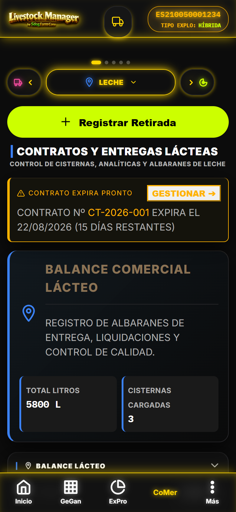
[CAPTURA] comercializacion-carrusel.png Carrusel 5 submodulos bajo el header + cabecera de modulo con KPI y accion principal1.2 Acceso Rapido (Dos Vias)
- Menu Mas: barra inferior → Comercial
- Hub ExPro: consola de produccion → boton directo "Ir a Comercializacion"
- Alerta contratos: si un contrato expira en ≤30 dias, aparece una tarjeta dorada "CONTRATO EXPIRA PRONTO" con acceso directo a la pestana Contratos
1.3 Modo de Explotacion por Finca
- Submodulos leche y carne se muestran solo si el flag correspondiente esta activo en la finca
- compradores, contratos y transportistas siempre disponibles
- Sin flags activos, la primera pestana permitida se selecciona automaticamente
2. Tab Carne — KPIs + Wizard Venta Masiva (5 Pasos)
Gestion integral de ventas de ganado: KPIs de rendimiento, margen neto real y el asistente App._abrirWizardVentaMasiva() de 5 pasos. Header verde lima.
js/views/wizards/wizard-venta-masiva.js2.1 KPIs de Carne
| KPI | Calculo | Color |
|---|---|---|
| Peso Canal (kg) | Suma peso canal (o peso vivo) de ventas | Neutro |
| Animales Vendidos | Número de ventas registradas | Neutro |
| Rend. Promedio | Media rendimiento de canal % | Neutro |
| Ingreso Bruto | Suma precio total de ventas | Gris |
| Margen Neto Real | Ingreso − gastos transporte − gastos matanza | var(--c-success) |
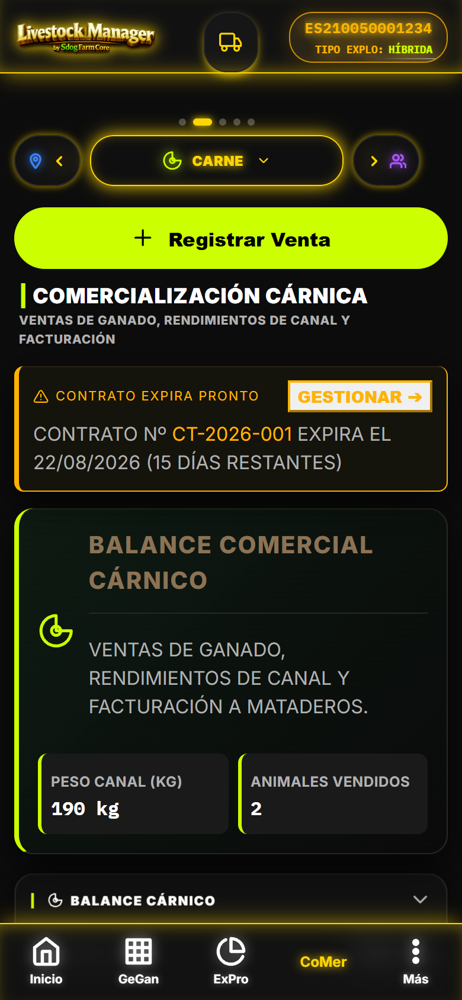
[CAPTURA] comercializacion-carne-kpis.png Tab Carne: KPIs (peso canal, vendidos, rend., ingreso, margen neto) + boton Registrar Venta2.2 Wizard Venta Masiva — 5 Pasos
| Paso | Pantalla | Campos Clave |
|---|---|---|
| 1 | Analisis Aptitud | Checkbox por animal, select-all lote. Valida supresion, edad (JOVEN), DIB (bovinos), gestacion (GEST.). Aptos/Bloqueados |
| 2 | Trazabilidad Logistica | Fecha sacrificio, matadero destino, codigo ICA, Nº Guia, declaracion fitosanitaria colectiva (ausencia residuos 180 dias) |
| 3 | Datos Economicos | Peso vivo / peso canal por animal, precio unitario, gastos transporte y matanza. Rendimiento calculado automaticamente |
| 4 | Liquidacion y Cliente | Comprador, IVA %, clasificacion SEUROP (S/E/U/R/O/P), contrato asociado |
| 5 | Logistica y Autorizacion | Transportista ATG, firma veterinario, generacion de documentos oficiales |
2.3 Detalle de Pasos
Paso 1 — Analisis de Aptitud: tabla con ID oficial, raza y estado (APTO / BLOQUEADO). Los bloqueados muestran los motivos concatenados (ej. 14D | JOVEN | SIN DIB | GEST.).
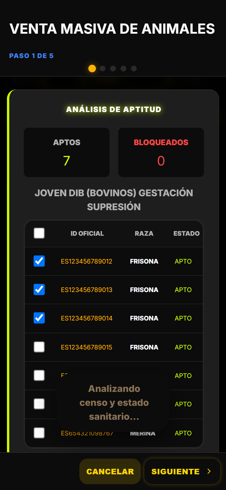
[CAPTURA] wizard-venta-masiva-paso1.png Paso 1: contadores Aptos/Bloqueados + tabla seleccion con validacion automaticaPaso 2 — Trazabilidad Logistica: fecha, matadero, ICA y guia. La declaracion fitosanitaria colectiva confirma ausencia de residuos en los 180 dias previos.
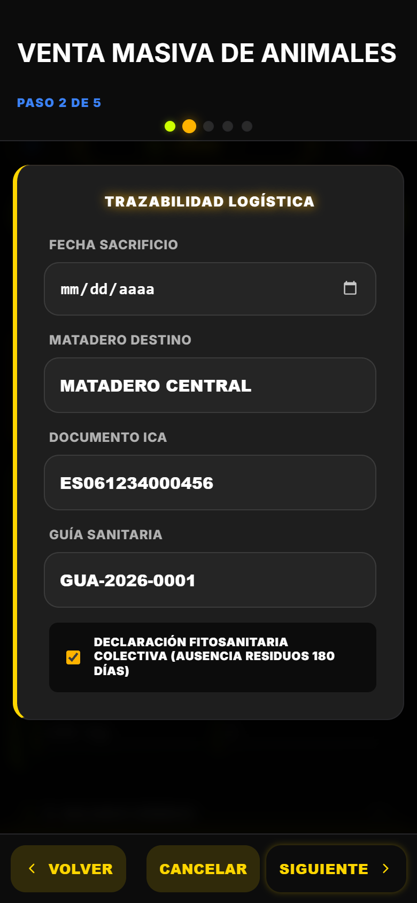
[CAPTURA] wizard-venta-masiva-paso2.png Paso 2: formulario trazabilidad con ICA, guia sanitaria y checkbox fitosanitarioPaso 3 — Datos Economicos: pesos vivo/canal, precio unitario y gastos; la app calcula el rendimiento y la liquidacion en vivo.
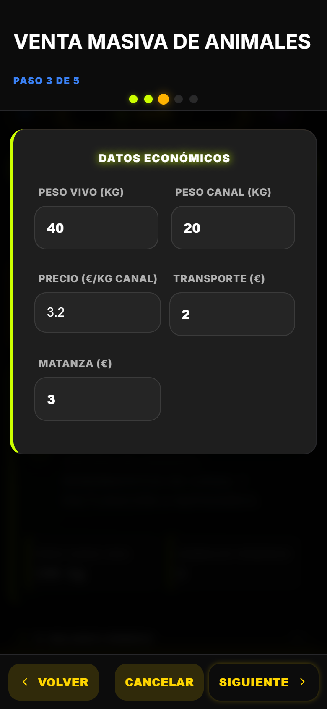
[CAPTURA] wizard-venta-masiva-paso3.png Paso 3: pesos, precio unitario y gastos con calculo automatico de rendimientoPaso 4 — Liquidacion y Cliente: seleccion de comprador, tipo de IVA, clasificacion de canal SEUROP y contrato de venta.
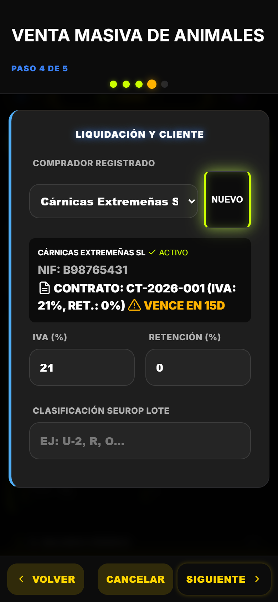
[CAPTURA] wizard-venta-masiva-paso4.png Paso 4: comprador, IVA, clasificacion SEUROP y contratoPaso 5 — Logistica y Autorizacion: transportista con ATG, autorizacion veterinaria y generacion de documentos.
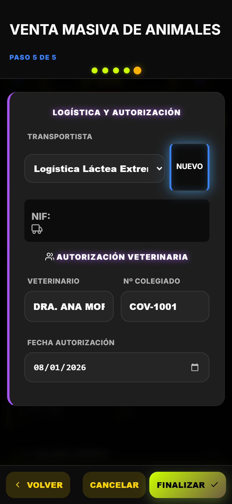
[CAPTURA] wizard-venta-masiva-paso5.png Paso 5: transportista ATG, firma veterinario y documentos oficiales2.4 Bloqueo Sanitario
3. Tab Leche — KPIs + Wizard Albaran Leche (6 Pasos)
Registro de recogidas de cisterna con control de calidad, precio y margen. Asistente App._abrirWizardAlbaranLeche() de 6 pasos. Header azul.
js/views/wizards/wizard-albaran-leche.js3.1 KPIs de Leche
| KPI | Calculo | Color |
|---|---|---|
| Total Litros | Suma de cantidades de entregas | Neutro |
| Cisternas Cargadas | Numero de recogidas | Neutro |
| Alimentacion Periodo | Gastos de alimentacion entre primera y ultima recogida | var(--c-danger) |
| MOFA Real (Neto) | Ingresos leche − coste alimentacion del periodo | var(--c-success) |
3.2 Wizard Albaran Leche — 6 Pasos
| Paso | Pantalla | Campos Clave |
|---|---|---|
| 1 | Cisterna | Datos de carga, temperatura y Letra Q |
| 2 | Laboratorio | Grasa, proteina, celulas somaticas |
| 3 | Volumen | Litros cargados y muestras |
| 4 | Precio | Calculo de precio final segun extracto seco |
| 5 | MOFA | Calculo de margen lacteo (ingresos − alimentacion) |
| 6 | Albaran | Generacion del documento oficial con liquidacion |
3.3 Flujo de Recogida
- Pulsa
Registrar Retiradapara abrir el wizard de 6 pasos - Registra datos de cisterna, temperatura de carga y Letra Q
- Introduce los resultados del laboratorio (grasa, proteina, somaticas)
- La app calcula el precio final (RD 989/2022) y el MOFA mensual
- El albaran se genera con el contrato lacteo, INFOLAC y estado de presentacion
4. Compradores — Cartera de Clientes
Registro de mataderos, cooperativas y centrales lecheras con historial de ventas y contratos. Ruta #/compradores. Header purpura.
js/views/compradores-view.js4.1 Listado con Badges de Tipo
Cada comprador muestra un badge de tipo comercial: carnico, lacteo o hibrido.
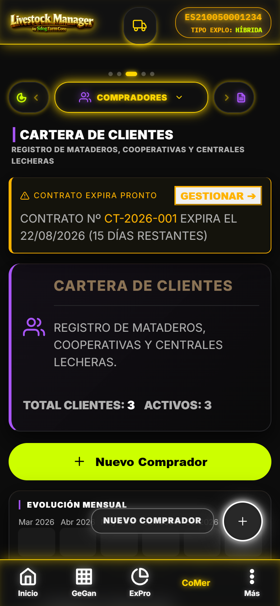
[CAPTURA] compradores-listado.png Listado de compradores con badges de tipo y acciones de gestion4.2 Detalle de Comprador
- Historial de ventas asociadas (fechas, pesos, importes)
- Contratos vinculados con vigencia y precios
- Datos fiscales (NIF/CIF) y REGA de destino
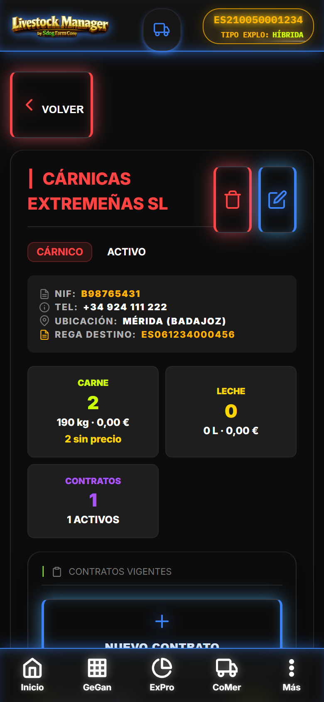
[CAPTURA] compradores-detalle.png Detalle: historial de ventas + contratos del comprador4.3 Nuevo Comprador (Wizard 2 Pasos)
- Paso 1 — Datos: nombre (EJ: GANADERÍAS DEL SUR S.L.), NIF/CIF, tipo, contacto
- Paso 2 — REGA/CCAA: REGA destino, comunidad autonoma, condiciones de pago
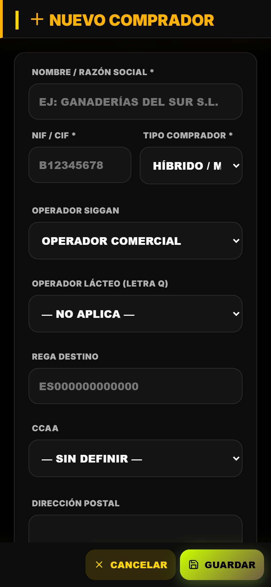
[CAPTURA] compradores-nuevo.png Wizard nuevo comprador: paso 1 datos, paso 2 REGA/CCAA5. Proveedores — Suministros y Gastos
Gestion de proveedores por categorias con historial de gastos. Ruta #/proveedores.
js/views/proveedores-view.js5.1 Listado por Categorias
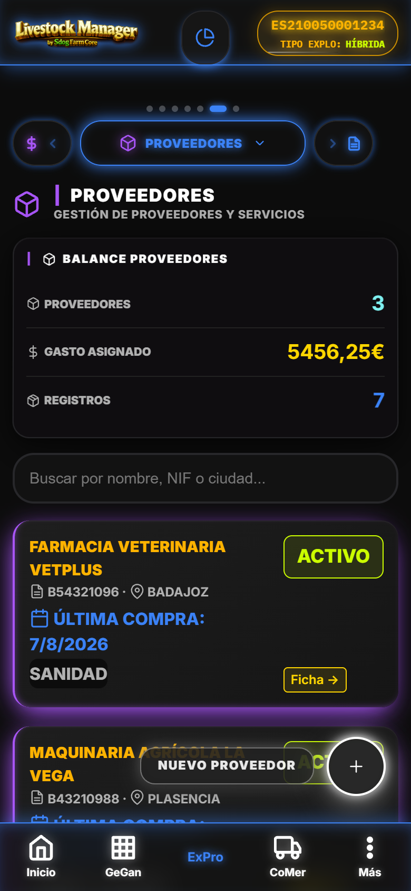
[CAPTURA] proveedores-listado.png Proveedores agrupados por categoria (piensos, sanidad, ferreteria...)5.2 Detalle — Historial de Gastos
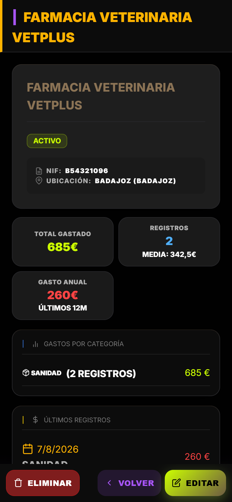
[CAPTURA] proveedores-detalle.png Detalle proveedor: historial de gastos e importe acumulado5.3 Nuevo Proveedor (2 Pasos)
- Paso 1: nombre (EJ: SUMINISTROS AGRÍCOLAS S.L.), NIF/CIF, categoria
- Paso 2: contacto, direccion y condiciones de pago
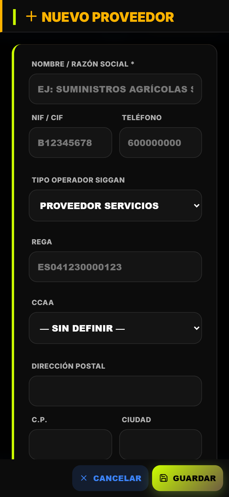
[CAPTURA] proveedores-nuevo.png Wizard nuevo proveedor en dos pasos6. Transportistas — Logistica Certificada
Flota de transporte ganadero calificado con semaforo de certificados. Ruta #/transportistas. Header rosa.
js/views/transportistas-view.js6.1 Listado con Semaforo de Certificados
- Semaforo por transportista: ATG, desinsectacion, bienestar animal
- Verde: certificado en vigor / Rojo: caducado o ausente
- Matriculas y flota asociada
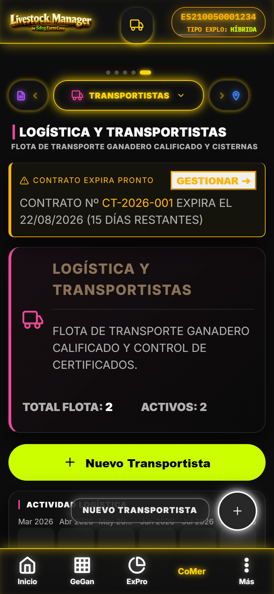
[CAPTURA] transportistas-listado.png Listado transportistas con semaforo de certificados (ATG, desinsectacion, bienestar)6.2 Nuevo Transportista
- Datos de flota y matricula
- Certificado ATG (autorizacion transporte ganado)
- Desinsectacion y fecha de la ultima desinfeccion
- Bienestar animal (normativa transporte RD 751/2006)
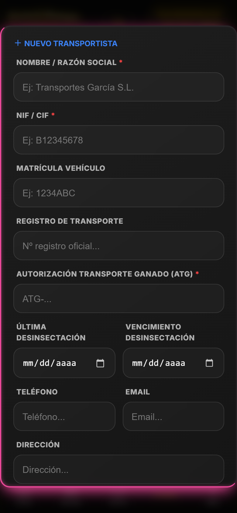
[CAPTURA] transportistas-nuevo.png Formulario nuevo transportista: ATG, desinsectacion y bienestar7. Contratos — Acuerdos Multi-Precio
Acuerdos comerciales de suministro con tabla de precios multi-producto y alertas de vencimiento. Ruta #/contratos.
js/contratos.js · store contratos_compra7.1 Listado con Alertas de Vencimiento
- Alertas doradas para contratos que expiran en ≤30 dias
- Contador de dias restantes y numero de contrato
- En finca demo, el contrato
CT-2026-001se auto-ajusta para probar la alerta
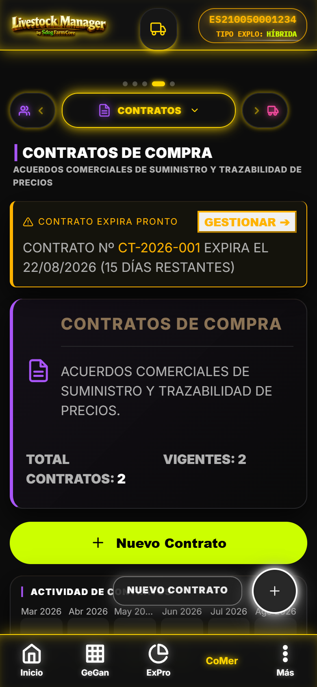
[CAPTURA] contratos-listado.png Listado contratos con alerta de vencimiento en 15 dias7.2 Detalle — Tabla de Precios Multi-producto
Precios por unidad de producto: kg, L, UD o CAB (cabeza), segun el tipo comercial del contrato.
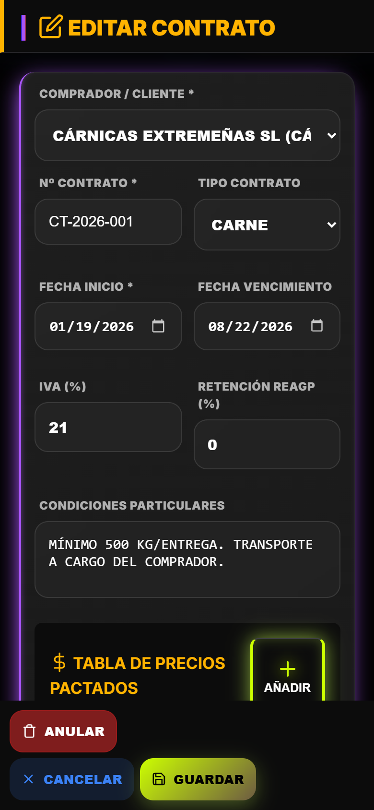
[CAPTURA] contratos-detalle.png Detalle contrato: tabla de precios multi-producto con unidades kg/L/UD/CAB7.3 Nuevo / Editar Contrato
- Numero de contrato, comprador asociado y vigencia (inicio/fin)
- IVA % y retencion %
- Precios por producto con tipo de unidad
- Estado: activo / anulado
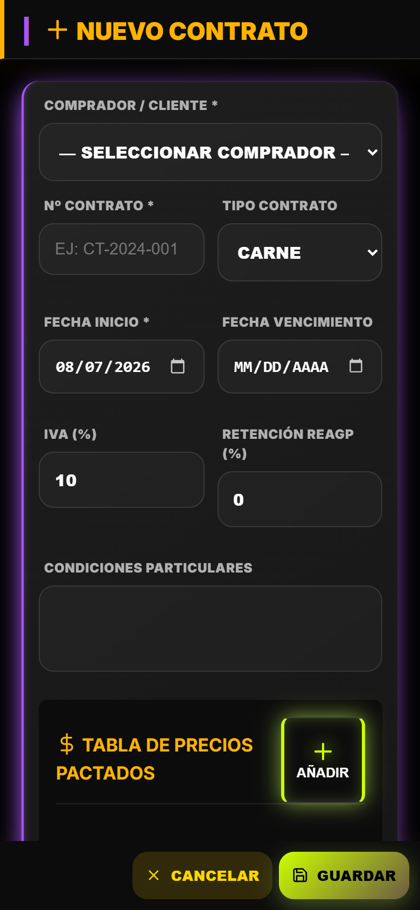
[CAPTURA] contratos-nuevo.png Formulario nuevo/editar contrato con precios y vigencia8. Albaranes y Facturas — Historial Integrado
Historial unificado de albaranes de leche y carne con generacion de PDF y facturas. Ruta #/albaranes-ventas.
js/views/albaranes-view.js · App.imprimirAlbaran() · App.imprimirFactura()8.1 Historial Integrado (Tabs Todo/Leche/Carne)
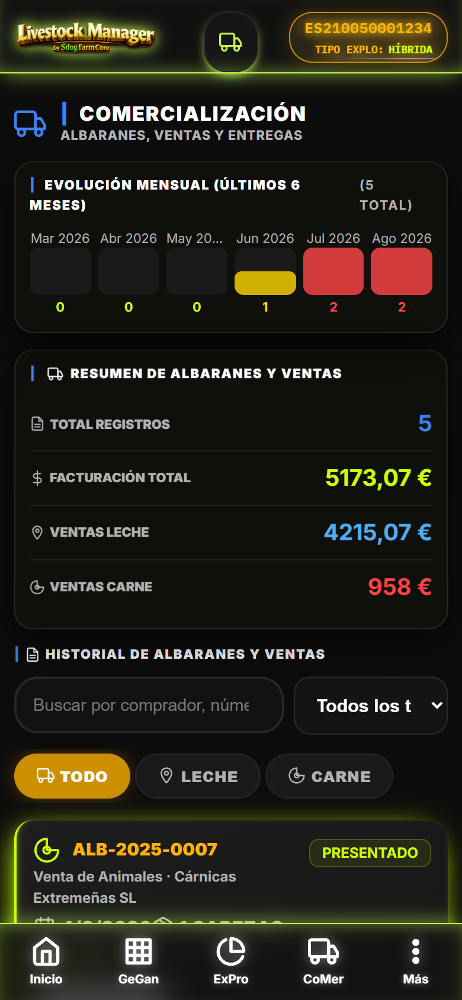
[CAPTURA] albaranes-historial.png Historial de albaranes con pestanas Todo / Leche / Carne8.2 Detalle de Albaran
- Datos DIMOE para ventas de carne
- PDF del albaran con liquidacion (DocumentViewer)
- Generacion de factura asociada
- Estados: borrador, presentado, validado, rechazado, anulado
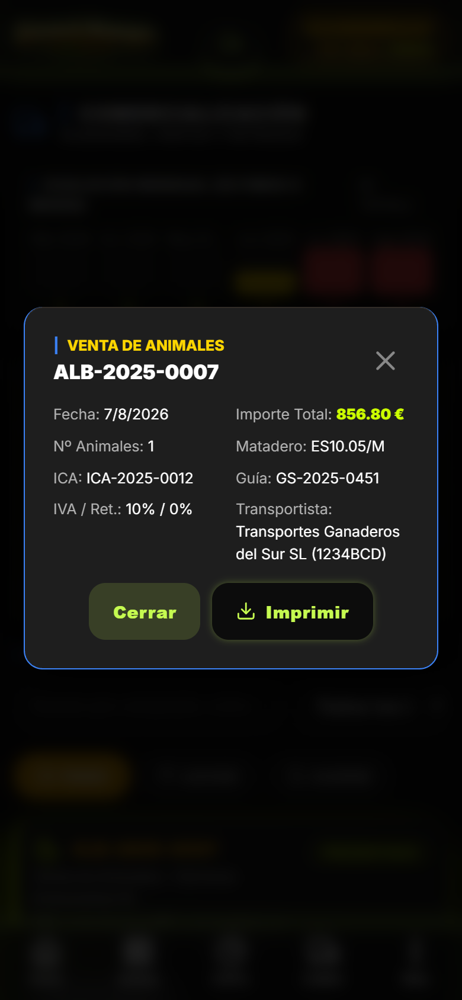
[CAPTURA] albaranes-detalle.png Detalle albaran: DIMOE, boton PDF y generacion de factura9. Integracion SIGGAN / BADIGEX
Trazabilidad normativa en todo el flujo comercial: Andalucia (SIGGAN) y Extremadura (BADIGEX).
9.1 Documentos y Codigos Oficiales
| Elemento | Uso | Normativa |
|---|---|---|
| DIMOE | Documento de identificacion del movimiento ganadero (ventas de carne) | Reglamento UE 2016/429 |
| ICA | Codigo ICA del destino (matadero) en cada venta | Reglamento UE 2016/429 |
| Nº Guia | Guia sanitaria de transporte de animales vivos | RD 728/2007 |
| SEUROP | Clasificacion de canales (S/E/U/R/O/P) para liquidacion | Reglamento UE 1308/2013 |
| INFOLAC | Notificacion de entregas lacteas | RD 989/2022 |
| Letra Q | Declaracion de calidad de la leche cruda | RD 989/2022 |
9.2 Bloqueos Normativos
10. Datos Demo CHAMORRO & Validacion
Validacion guias PWA 2026-08-04: CoMer 40/42 targets (vs 53/55 Android, 1 target por datos demo).
10.1 Cobertura Demo para Comercializacion
10.2 Pruebas Clave
- Wizard Venta Masiva: bloquear un animal en supresion y verificar que no se puede vender
- Wizard Albaran Leche: precio final segun extracto seco (RD 989/2022) y MOFA
- Alerta de contrato: abrir con
CT-2026-001expirando en 15 dias - PDF albaran/factura con DocumentViewer (Compartir/Imprimir/Descargar)
10.3 Carga de la Demo
Carga la finca demo desde Ajustes → Asistente Configuracion → Cargar Demo CHAMORRO para replicar exactamente las capturas de este manual.